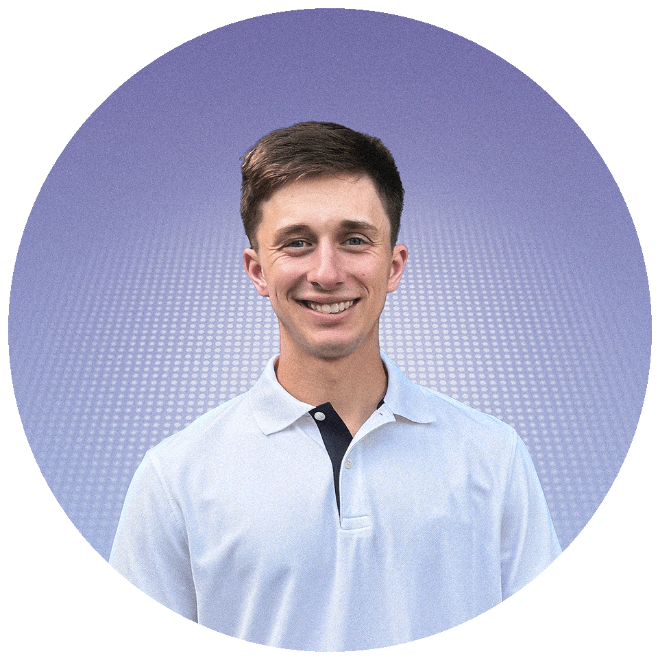

About
Hi, I'm Corey. I graduated in 2024 with a major in Marketing and a minor in Graphic Design. I've been practicing design since 2019, and below you can explore my work experience.
Experience
Mercer Athletics - Director of Creative Content
August 2025 - Current
University of Maine Athletics - Graphic Design
2024 - Current
Working with the Universities marketing department to create stylized marketing material to promote the school’s athletic teams.
University of Maine Football - Graphic Design Internship
2024
Helped recruiting and marketing create design material for the University of Maine's football team.
University of Maine Center for Student Involvement - Marketing & Graphic Design
2022-23
Produced print and social media marketing material for student events.
Fresh Since 2015 - Freelance Graphic Design
2022
Helped produce branding materials for small businesses.
CJLogos - Graphic Design Business
2018-2021
I offered graphic design services to a variety of clients including but not limited to the eSports community. Built and maintained strong relationships with clients. Continuously honed design skills and stayed up-to-date with industry trends.
Octocog - Graphic Design Internship
2019
Designed various marketing material for clients and collaborated with the creative team to implement new design ideas.
© Corey Jurasek 2025